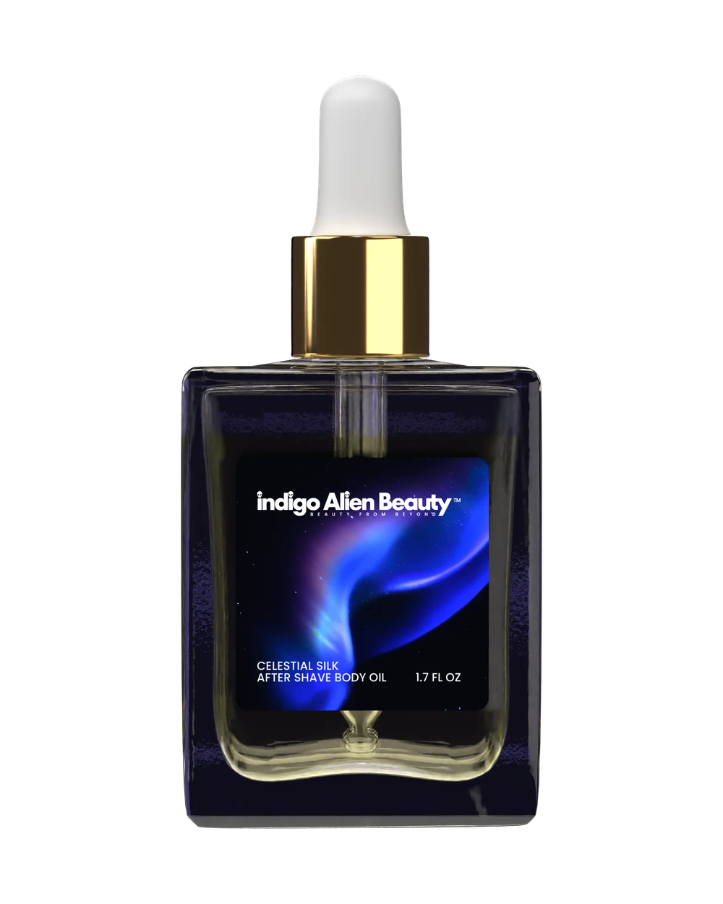

Catalogue / Celestial Silk After Shave Body Oil

Celestial Silk After Shave Body Oil
$30
Honor your vessel after the grounding ritual of shaving. This divine balm is a transmission of Gaia’s healing energies, combining Manuka honey's restorative vibrations with the crystalline structure of Sea Moss. Infused with Vitamin E and a whisper of Lime essence, it calms and restores the skin, leaving behind a silky, high-frequency finish for the divine masculine.